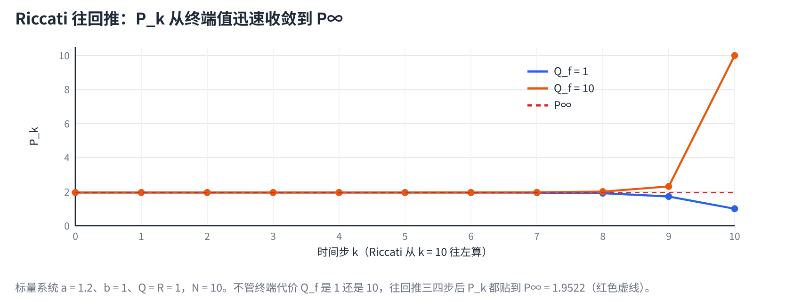
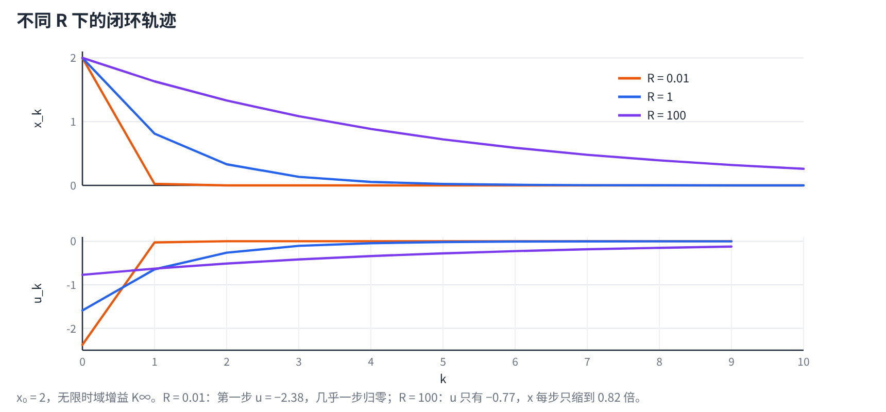
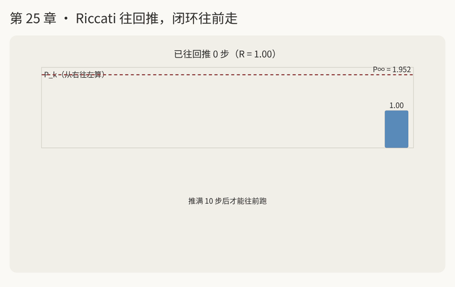

第 25 章 · LQR 与 Riccati：从动态规划推出 Riccati 方程，有限 / 无限时域与可控性
本地运行
git clone https://github.com/wikieden/math-and-eval-stats
cd math-and-eval-stats/code/notebooks
pip install jupyterlab torch numpy
jupyter lab ch25_lqr_riccati.ipynb也可以下载后直接用 VS Code 打开 .ipynb 运行。需要 GPU 的章节在 Colab 里选「代码执行程序 → 更改运行时类型 → GPU」。
本章回答：LQR 的增益 K 是怎么来的？为什么最优总代价正好是 xᵀPx？有限时域和无限时域的解有什么关系？Q、R 怎么调？什么时候 LQR 也救不了？
讲解日期：2026-11-25 · 上一章：第 24 章 策略梯度推导 · 下一章：第 26 章 轨迹优化与 MPC
对应原文：Underactuated Robotics LQR 章robot-motion-rl/materials/text/underactuated-lqr.txt（连续时间代数 Riccati 方程 L13–L16；有限时域 LQR L41–L45；离散时间 Riccati 差分方程与 DARE L64–L66）
本章缩写：LQR = Linear Quadratic Regulator（线性 / 二次 / 调节器）；DP = Dynamic Programming（动态规划）；DARE = Discrete-time Algebraic Riccati Equation（离散时间 / 代数 / Riccati 方程，Riccati 是意大利数学家）；HJB = Hamilton–Jacobi–Bellman（三位数学家的姓：连续时间的 Bellman 方程）；Q、R = 状态代价、控制代价的权重；Q_f = 终端代价；P（原文写 S）= 值函数的二次型矩阵；K = 反馈增益。全部缩写见 附录 · 缩写与术语表
讲解
第一步：动态规划往回推：值函数一直是二次型（2026-11-25）
类比：倒着排行程。 先想最后一天怎么过最划算，再推倒数第二天，一直推回今天。每一天的"剩余行程最低花费"只取决于你那天在哪。
系统 \(x_{k+1} = Ax_k + Bu_k\)，代价 \(\sum_k (x_k^\top Qx_k + u_k^\top Ru_k) + x_N^\top Q_fx_N\)。猜测 \(k+1\) 步以后的最优代价是 \(x^\top P_{k+1}x\)，那么第 k 步要解
对 u 求导令为 0：
代回去，剩下的还是 x 的二次型，系数就是 Riccati 差分方程（Underactuated L66）：
例子（标量 \(x_{k+1} = 1.2x_k + u_k\)，Q = R = 1，Q_f = 1，N = 10；a = 1.2 意味着不控制就发散）：
| k | 9 | 8 | 5 | 0 |
|---|---|---|---|---|
| P_k | 1.7200 | 1.9106 | 1.9520 | 1.9522 |
| K_k | 0.6000 | — | — | 0.7935 |
P₉ 手算：1 + 1.44 × 1 − (1.2 × 1)²/(1 + 1) = 1.72；K₉ = 1.2/(1 + 1) = 0.6。

图 25-1 · 横轴时间步 k（从右往左算），纵轴 P_k；两条线是终端代价 Q_f = 1 和 Q_f = 10，往回推几步后都收敛到同一个 P∞一句话：动态规划往回推，二次代价 + 线性系统让值函数一直是 xᵀP_kx，P_k 满足 Riccati 差分方程，增益 K_k 由 P_{k+1} 给出。
第二步：无限时域：P 收敛到代数 Riccati 方程的不动点（2026-11-25）
把时域拉长，P_k 往回推会收敛到一个不再变的 P∞，它满足去掉下标的方程，就是 DARE（Underactuated L66 末尾）：
例子：上面的标量系统，方程化成 \(P^2 - 1.44P - 1 = 0\)（\(b^2P^2 + (r - a^2r - qb^2)P - qr = 0\)），正根 P∞ = 1.9522，K∞ = 0.7935，闭环系数 a − bK = 0.4065（|·| < 1，稳了）。往回推 1、2、5、10 步：1.7200、1.9106、1.9520、1.9522，几步就收敛。
连续时间的版本是 \(0 = PA + A^\top P - PBR^{-1}B^\top P + Q\)（Underactuated L16），代数 Riccati 方程；有限时域版本是微分 Riccati 方程，它的稳态就是无限时域解（L45）。
和第 23 章的关系：Riccati 递推就是 Bellman 最优算子作用在"二次型值函数"上；P∞ 是它的不动点，和值迭代收敛到 V* 是一回事。
一句话：无限时域 LQR 的 P 是 Riccati 递推的不动点（DARE）；实际控制器常用这个常数增益 K∞。
第三步：最优总代价就是 x₀ᵀP₀x₀（2026-11-25）
类比：P 是一张"报价单"。 告诉它现在的位置，它直接报出"从这里开始，以后都按最优开，总共要花多少"。
例子：x₀ = 2，P₀ × 4 = 7.8089；按 K₀ … K₉ 闭环真跑一遍，把每步代价加起来也是 7.8089。换成固定增益：
| 增益 | 总代价 |
|---|---|
| 最优 K_k | 7.8089 |
| K = 0.6 | 8.4998 |
| K = 1.0 | 8.3333 |
| K = 1.2（一步就把 x 拉到 0） | 9.7600 |
K = 1.2 让 x 一步归零，但第一步花了 1.44 × 4 的控制代价；最优解是"边拉边省力"。
一句话：Riccati 的 P 是值函数本身：xᵀPx = 从 x 出发的最优总代价，任何别的增益都只会更贵。
第四步：Q、R 怎么调（2026-11-25）
只有 Q/R 的比值有意义（同乘一个数，最优 K 不变）。
例子（标量系统，Q = 1）：
| R | P∞ | K | 闭环极点 a − bK |
|---|---|---|---|
| 0.01（控制很便宜） | 1.0143 | 1.1883 | 0.0117（几乎一步归零） |
| 1 | 1.9522 | 0.7935 | 0.4065 |
| 100（控制很贵） | 47.1221 | 0.3844 | 0.8156（慢慢回来，但仍稳） |
R 再大，K 也不会小到让闭环发散：只要系统可控（下一步），LQR 总给出稳定的闭环，它至少会花"刚好把不稳定模态拉住"的力气。
场景代码：机器人里实际这么调（scipy 是真实库调用；这几行写法和第 21 章代码一致）：
from scipy.linalg import solve_discrete_are
Q = np.diag([10.0, 1.0]) # 位置误差比速度误差重要 10 倍
R = np.array([[0.1]]) # 力矩便宜一点：响应更快
P = solve_discrete_are(Ad, Bd, Q, R)
K = np.linalg.solve(R + Bd.T @ P @ Bd, Bd.T @ P @ Ad)

图 25-2 · 从 x₀ = 2 出发，R = 0.01、1、100 三种无限时域 LQR 的状态 x_k（上）和控制 u_k（下）；R 越小第一步出力越大、回零越快一句话：Q/R 的比值决定激进程度：R 小 → 增益大、收敛快、力矩大；R 大 → 温和但仍稳定。
第五步：可控性：控制量够不着的模态，LQR 也救不了（2026-11-25）
可控性矩阵 \(\mathcal C = [B, AB, \dots, A^{n-1}B]\) 满秩（= n）时，控制量能把状态推到任何地方。
例子：
| 系统 | 秩 | 结论 |
|---|---|---|
| 双积分器 A = [[1, 0.1], [0, 1]]，B = [0, 0.1] | 2 | 可控：力影响速度，速度影响位置 |
| A = diag(1.2, 0.5)，B = [0, 1] | 1 | 第一个状态完全不受 u 影响，而且按 1.2 倍发散 |
第二个系统的 DARE 没有稳定化解：怎么调 Q、R 都没用。更弱的条件"可镇定"（不可控的模态本身是稳定的）就够 LQR 用了（Underactuated L16："有唯一正定解当且仅当系统可镇定"）。
一句话：先查可控性（或可镇定性）：执行器够不着的不稳定方向，任何控制器都救不了，要改硬件或改状态定义。
动画演示：Riccati 往回推，闭环往前走

可交互版：animations/25-lqr-riccati.html（滑块调往回推的步数和 log₁₀ R）。
怎么看：
- 上半部分：从右往左一格一格算 P_k，柱子高度是 P_k，几步就和虚线 P∞ 一样高（第一、二步）；
- 下半部分：用算出来的增益从 x₀ = 2 往前跑，柱子是每步代价，右上角累计总代价 = P₀x₀²（第三步）；
- 拖 R：R 小时第一根代价柱（控制代价）很高、之后几乎为 0；R 大时代价摊得很长（第四步）。
练习与作答记录
题 1（第一步）：标量系统 a = 1、b = 1、Q = 1、R = 1、Q_f = 0。往回推两步，写出 P_{N−1}、P_{N−2} 和 K_{N−2}。
作答：（待作答）
题 2（第二步）：同一个系统（a = 1、b = 1、Q = R = 1）的无限时域 P∞ 和 K∞ 是多少？闭环系数是多少？
作答：（待作答）
题 3（第五步）：A = [[1, 1], [0, 1]]，B = [1, 0]ᵀ（力直接作用在位置上，不作用在速度上）。可控吗？说出哪个方向够不着，以及这个方向自己会不会发散。
作答：（待作答）
口诀
倒着排行程，值函数一直是二次型，Riccati 往回推；
推到不动就是 DARE，常数增益 K 拿去用；
xᵀPx 是报价单，别的增益只会更贵；
Q 比 R 定激进；够不着的不稳模态谁也救不了。
本章复习卡片
ST86（Riccati 差分方程从动态规划怎么推出来）、ST87（DARE、P 是值函数、有限与无限时域的关系）、ST88（Q/R 的作用与可控性）。练习做完后，按答错、卡住的地方补上。
附录 · 延伸阅读
留给以后深入学习用，不影响本章主线。★ 是建议先读的。
推荐阅读
| 读什么 | 读哪里 | 读它为了什么 |
|---|---|---|
| ★ Underactuated Robotics LQR 章 | L13–L16（连续 ARE）、L41–L45（有限时域）、L64–L66（离散 Riccati） | 本章公式的出处，含 HJB 推导 |
| ★ 《机器人运控与强化学习》第 12 章 LQR | 全章 | 在机器人上怎么用、怎么调 |
| 第 21 章 动力系统与控制 | 第四、五步 | LQR 的第一次出场、和 Bellman 的关系 |
| 第 23 章 MDP 与 Bellman | 第二、三步 | Riccati 递推 = Bellman 算子作用在二次型上 |
| Boyd《Convex Optimization》 | §4.4（二次规划） | 把 LQR 看成一个 QP（第 26 章会用） |
数学原理
- 二次型对 u 求最小：\(\min_u u^\top Mu + 2u^\top b\) 在 \(u = -M^{-1}b\)，最小值 \(-b^\top M^{-1}b\)；M = R + BᵀPB 正定（R ≻ 0）保证唯一。
- 为什么值函数保持二次型：二次型 + 线性代入 + 对 u 取最小（Schur 补）都保持二次型。
- DARE 的解：(A, B) 可镇定、(A, Q^{1/2}) 可检测时，有唯一的半正定稳定化解，Riccati 递推从任何 P_N ⪰ 0 出发都收敛到它。
- 可控性：\(x_n = A^nx_0 + \sum A^{n-1-k}Bu_k\)，能到达的方向就是 \([B, AB, \dots]\) 的列空间。
公式清单
| 公式 | 意思 |
|---|---|
| \(K_k = (R + B^\top P_{k+1}B)^{-1}B^\top P_{k+1}A\) | 第 k 步增益 |
| \(P_k = Q + A^\top P_{k+1}A - A^\top P_{k+1}B(\cdot)^{-1}B^\top P_{k+1}A\) | Riccati 差分方程 |
| \(P = Q + A^\top PA - A^\top PB(R + B^\top PB)^{-1}B^\top PA\) | DARE |
| \(J^*(x_0) = x_0^\top P_0x_0\) | 最优总代价 |
| \(\text{rank}[B, AB, \dots, A^{n-1}B] = n\) | 可控 |
代码对照：把本章的数字用代码算一遍
代码在仓库本地
math-and-eval-stats/solutions/chapter-code/ch25_lqr_riccati.py，配套测试tests/test_ch25.py：
bash cd math-and-eval-stats/solutions/chapter-code uv run python ch25_lqr_riccati.py uv run pytest tests/test_ch25.py
讲义 ↔ 代码：
| 讲义 | 公式 | 写法 | 跑出来 |
|---|---|---|---|
| 第一步 往回推 | Riccati 差分 | finite_horizon(10) |
P₉ = 1.72，P₀ = 1.9522 |
| 第二步 无限时域 | DARE 正根 | dare_scalar() |
1.9522，K = 0.7935 |
| 第三步 总代价 | x₀ᵀP₀x₀ | rollout_cost(2.0, ks) |
7.8089 |
| 第四步 调 R | DARE(r) | dare_scalar(r=0.01) |
K = 1.1883 |
| 第五步 可控性 | 秩 | ctrb_rank(A, B) |
2 / 1 |
关键几行：
k = a * b * p / (r + b * b * p) # 用下一步的 p 算这一步的增益
p_new = q + a * a * p - (a * b * p) ** 2 / (r + b * b * p) # Riccati 差分方程（标量版）
c2, c1, c0 = b * b, r - a * a * r - q * b * b, -q * r # DARE 化成二次方程，取正根
代码里才看得到的 3 件事：
- 列表倒序：往回推时先算出 P_N、P_{N−1}…，代码最后
[::-1]翻成按时间顺序，K_k 和 P_{k+1} 才对得上。 - 增益用的是下一步的 P：
riccati_step(p)里同一个 p 同时算 K 和新 p，这个 p 是 P_{k+1}。 - 标量 DARE 取正根：二次方程两个根一正一负，负根不对应任何"代价"，代码直接取
+sqrt。
自己改一改（不影响练习答案）：
- 把 Q_f 改成 100，看 P_k 要往回推几步才收敛到同一个 P∞。
- 把 a 改成 0.8（自己就稳定），R 调到 1000，K 会变成多少？为什么这时可以几乎不控制？